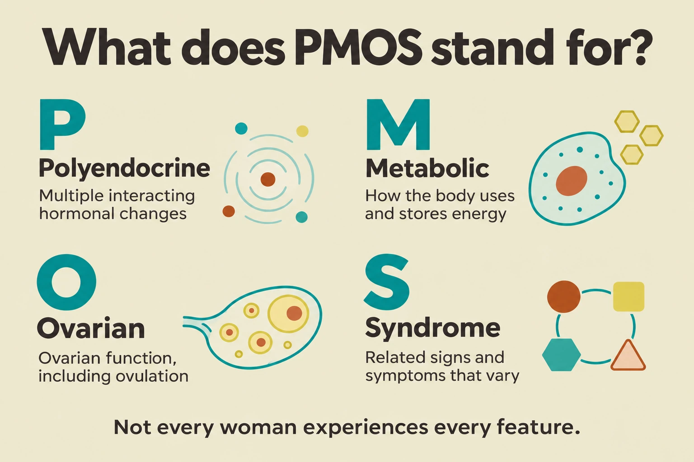
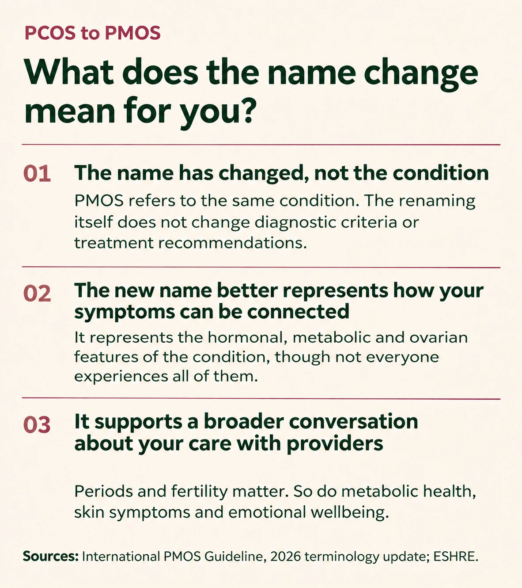
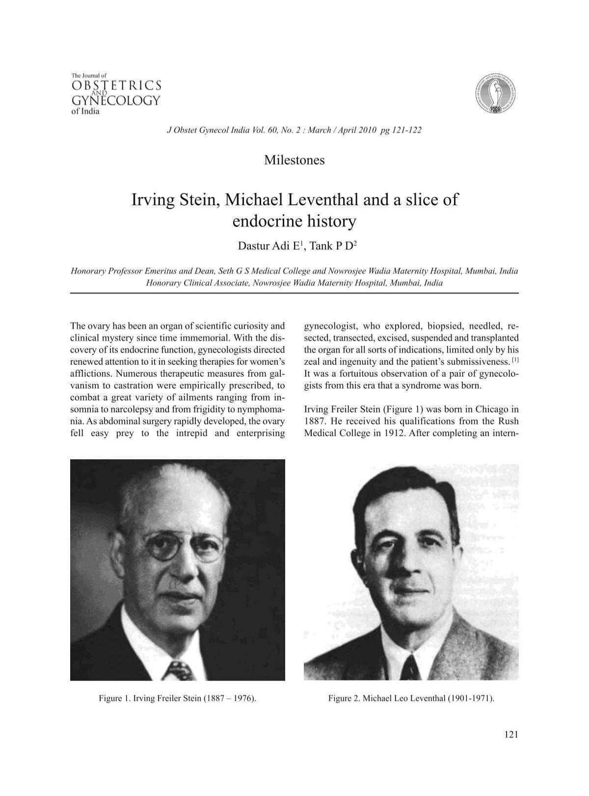

On 12 May 2026, an international collaboration of 56 patient and professional organisations announced the renaming of polycystic ovary syndrome (PCOS) to polyendocrine metabolic ovarian syndrome (PMOS) to better describe the condition. The new name recognises what many women with PCOS have long known: its effects extend beyond the ovaries. It shifts the focus from only “cysts on ovaries” to the interconnected hormonal and metabolic changes that shape their experience. [1]
The change was 14 years in the making. A US National Institutes of Health workshop recommended renaming the condition in 2012, and international guidelines for diagnosing and managing PCOS reinforced that call in 2023. Years of advocacy and collaboration among researchers, healthcare professionals and women with PCOS helped shape a name that better reflected their understanding and experiences. [2]
What does PMOS stand for?
PMOS stands for polyendocrine metabolic ovarian syndrome. Each word describes part of the condition, bringing its hormonal, metabolic and ovarian features together in one name. [3]
Not every woman experiences every feature, or experiences them in the same way. The name describes the broader condition, rather than a checklist of symptoms everyone must have.


P: Polyendocrine
“Poly” means many, and “endocrine” refers to hormones and the systems that produce them. Polyendocrine recognises that the condition involves multiple interacting hormonal disturbances. These can include higher androgen levels contributing to acne or excess facial hair, and changes in the hormones that regulate ovulation contributing to irregular periods. [2]
M: Metabolic
Metabolism includes how our bodies turn food into energy, use it and store it. PMOS can affect these processes through insulin resistance, where cells respond less effectively to the hormone that helps them use blood sugar for energy. The condition is also associated with changes in cholesterol and a higher risk of type 2 diabetes. “Metabolic” recognises these effects beyond reproductive health, though not every woman experiences the same changes. [4]
O: Ovarian
The ovaries remain an important part of the condition. Changes in ovarian function can affect hormone production, egg development and ovulation, contributing to irregular periods and difficulties conceiving. “Ovarian” keeps that connection without defining the condition by the appearance of the ovaries alone. [3, 4]
S: Syndrome
A syndrome is a recognisable pattern of related signs and symptoms that can appear in different combinations. Women with PMOS don’t all experience the same features, and no single experience defines the condition for everyone.
Why was PCOS renamed to PMOS?
PCOS stands for polycystic ovary syndrome. The name centres the ovaries and their appearance, but it does not capture the interacting hormonal and metabolic changes that shape the condition. The condition’s effects extend beyond the ovaries, periods and fertility. [3]
PMOS—polyendocrine metabolic ovarian syndrome—describes that broader picture. It brings the hormonal and metabolic features into the name while retaining the ovaries as an important part of the condition. The change brings the terminology closer to how the condition actually manifests. [3]
Understanding expands beyond the ovaries
Ovarian appearance could not explain the full pattern of symptoms women were experiencing. Research into reproductive hormones helped explain changes in ovulation and androgen levels, while research into insulin resistance brought the condition’s metabolic features into focus. Together, these findings showed why it could not be understood through the ovaries’ appearance alone. [5]
Diagnostic criteria also moved beyond ovarian appearance. Hormonal features and infrequent or absent ovulation became central to defining the condition, even when polycystic-looking ovaries were absent. The scientific understanding had broadened, but the name continued to centre ovarian “cysts”. [7]
PMOS seeks to bring those two things closer together: what the condition is called and how it actually manifests. The aim is a fuller description of the condition, including the features that can be overlooked when the conversation focuses mainly on periods and fertility. [3]
Disorder, disease, or syndrome?
Several names have circulated, including polycystic ovary disorder, polycystic ovary disease and polycystic ovary syndrome. These terms overlapped in medical literature rather than replacing one another through a sequence of official decisions. [8]
“Syndrome” describes that pattern of related features, and PMOS retains the word. The change is in how the pattern is described: the new name makes its hormonal and metabolic dimensions explicit.
What does the name change mean for you?


The name has changed, not the condition
If you have a PCOS diagnosis, PMOS refers to the same condition. The renaming itself does not change the diagnostic criteria or treatment recommendations. [2]
The new name better represents how your symptoms can be connected
Acne, excess facial hair, irregular periods and metabolic changes can seem like separate problems. The new name better represents how these features can be connected, without suggesting that every woman with PMOS experiences all of them. [2]
It supports a broader conversation about your care with providers
Periods and fertility matter, but so do metabolic health, skin symptoms and emotional wellbeing. The new name supports a conversation with your healthcare providers about the condition’s wider effects and which ones need attention in your care. [1, 2]
You may see both PCOS and PMOS during the three-year transition
The change is being introduced over a three-year transition period, so you may encounter PCOS, PMOS or “PMOS, formerly PCOS” in healthcare information. Both names refer to the same condition. [2, 10]
A more accurate name cannot fix gaps in care on its own. But it gives women living with the condition clearer language to describe their experiences and ask for care that reflects them.
How did our understanding of the condition evolve?
The new name reflects a broader understanding of the condition. To understand how that picture developed, it helps to look back at how the condition was first described and how research changed what doctors could recognise.
How ovarian appearance shaped the early understanding
Before ultrasound and modern hormone tests, doctors relied on symptoms and tissue examined during surgery and autopsies. Enlarged ovaries, thickened tissue and small fluid-filled structures were easier to observe than the underlying hormonal and metabolic mechanisms were to investigate. The descriptions that followed were shaped by what doctors could see. [9]
One early possible account came from Italian physician Antonio Vallisneri in 1721. He described enlarged ovaries in a woman experiencing infertility. This is often cited in histories of polycystic ovaries, though an early description of ovarian appearance is not the same as a diagnosis of the syndrome as we understand it today. [8]

In 1844, French physician Achille Chéreau described enlarged ovaries with a smooth, shiny surface and small “cysts” around the edges. Later descriptions used terms such as “sclerocystic ovaries”, referring to the thickened tissue and cyst-like appearance. Investigations became more detailed: in 1904, Palmer Findley examined around 180 cases of ovarian follicular degeneration, studying the tissue both with the naked eye and under a microscope. [9]
These observations built an anatomical picture. Stein and Leventhal’s 1935 report helped bring ovarian changes and symptoms together into a recognised clinical pattern. They described seven women with enlarged ovaries alongside menstrual disturbances and other features, examined tissue removed during surgery and followed their patients’ outcomes. Their work became associated with the name Stein–Leventhal syndrome. [7, 9]


These researchers contributed to our evolving knowledge, and their work matters. Yet these early accounts also overwhelmingly come from men studying a condition they would never live with. The wider history of medical research has often treated male physiology as the default, rather than recognising women’s distinct physiology and experiences. [12]
The ovarian appearance also needs clarification. The small fluid-filled structures referred to as “cysts” in the old name are follicles, where eggs develop, rather than true cysts. [4, 7]
How research changed the picture
As scientific tools improved, researchers could investigate processes that ovarian tissue alone could not explain. Elevated levels of luteinising hormone (LH), which helps regulate ovulation, were reported in 1958. More sensitive blood tests in the early 1970s allowed closer study of LH and other reproductive hormones. [5]
The metabolic picture also became clearer. A 1980 study by Burghen, Givens and Kitabchi found higher insulin levels in women with the condition than in the comparison group. The findings linked elevated insulin and androgen levels, helping establish the evidence behind the connection between the condition and insulin resistance. [6]

The definition of the condition began to reflect that broader understanding. At an NIH-sponsored conference in 1990, researchers proposed diagnostic criteria based on androgen excess and infrequent or absent ovulation, after excluding other causes. Androgens are hormones such as testosterone, which our bodies naturally produce. Polycystic-looking ovaries were not required. [7]
Understanding had moved beyond ovarian appearance. The terminology had not yet caught up.
How the name finally caught up
The call for a more accurate name brought scientific research and patient advocacy together. The 2012 NIH workshop recommendation and the 2023 international guideline helped establish the case for change, while women living with PCOS and advocacy groups continued pushing for language that better reflected their experiences. [2]
The international renaming effort involved 56 patient and professional organisations. Across the wider process, surveys generated more than 22,000 responses, alongside workshops involving healthcare professionals and women living with the condition. The name announced in May 2026 was the result of that collaboration. [1]
The journey from PCOS to PMOS reflects the distance between the condition’s early medical identity and the broader understanding we have today. The ovaries remain part of that story. The new name gives its hormonal and metabolic features a place alongside them.
Sources
1. Endocrine Society: PMOS name-change announcement, 12 May 2026
2. Monash University: International Guideline, May 2026 terminology update
3. Teede et al.: PMOS—a multistep global consensus process, The Lancet, 2026
4. 2023 International Evidence-based Guideline: assessment and management
5. Rosenfield and Ehrmann: The Pathogenesis of PCOS, 2016
7. Christ and Cedars: Current Guidelines for Diagnosing PCOS, 2023
8. Szydlarska, Machaj and Jakimiuk: History of discovery of PCOS, 2017
9. Adashi et al.: The polycystic ovary syndrome—the first 150 years of study
10. ESHRE: Position statement on the PCOS name change
11. Tufts Medicine: PCOS Is Now PMOS—Your Questions Answered, 29 May 2026